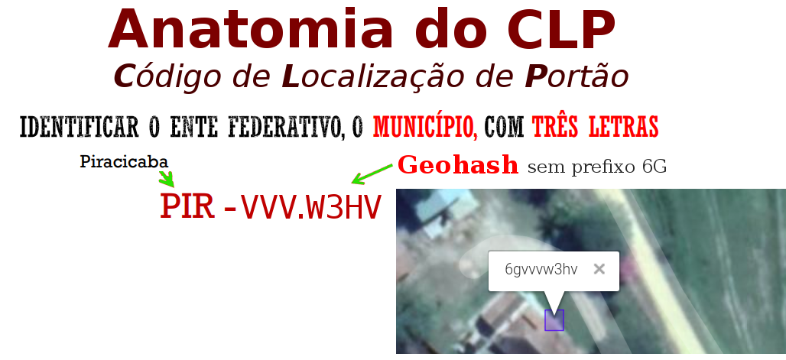
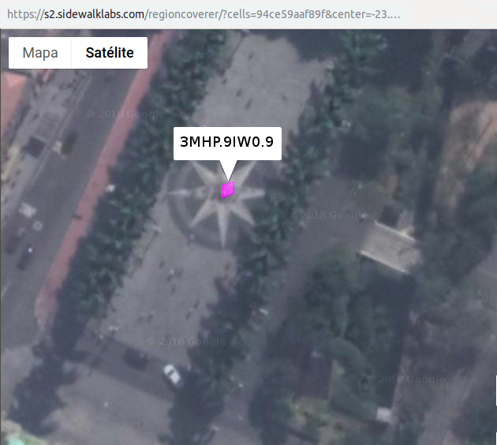
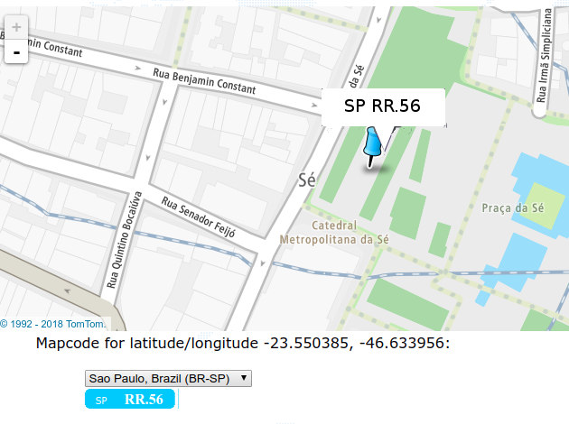
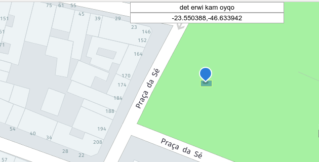

As coordenadas geográficas e a sua representação em padrões abertos não dependem de qualquer infraestrutura e, portanto, não dependem de empresas ou do governo para a sua existência e uso continuado. O padrão básico se chama Geo URI e vem sendo usado em links da internet (exemplo), na troca de dados (ex. vCard), na telefonia móvel (GeoSMS), no Android, e uma infinidade de outras.
A proposta de um Código Localizador de Portão baseado em coordenada (CLP-coordenada) consiste, a grosso modo, em representar de maneira hierárquica e compacta as coordenadas. Com uma hierarquia que começa na escala do município, representado por um código de 3 letras, até chegar no portão, cuja localização seria representada por um código do tipo Geohash — ou outro qualquer que venhamos a eleger no presente projeto.

As coordenadas geográficas são muito longas. No exemplo, se ficarmos só nos dígitos seriam ao todo 12, os dígitos "228607" da latitude e "479201" da longitude. Difícil decorar e trabalhoso digitar.
O primeiro passo é transformar esses 12 elementos em 8, ao traduzirmos as coordenadas para Geohash, 6GVVVW3D.
O segundo passo, para compactar mais um pouco, é fazer uso do contexto: se já sabemos que estamos localizados em SP e a sigla PIR já diz que é Piracicaba, então o Geohash não precisa dizer que estamos no hemisfério sul, etc. dispensamos o prefixo 6G do Geohash, comum a todos os pontos de Piracicaba. Sobram 6 caracteres: o código PIR-VVV.W3D é mais "palatável" para memorizar ou digitar.
Sintaxe
O código CLP é uma sequência de letras (A-Z) e números (0-9), com grupos separados por hífen ("-"). Essa sequência tem um prefixo e um sufixo, conforme a seguinte regra sintática, onde o prefixo é um código de jurisdição e o sufixo um códido de coordenada gegráfica válido para o interior do territorio da jurisdição:

Por ser um padrão restrito ao território brasileiro inicia pela sigla BR. As jurisdições "BR-" <uf>, referentes às unidades da federação, são determinadas pelo padrão ISO 3166-2:BR, ou seja, são as tradicionais siglas de estado padronizadas pelo IBGE. Em seguida a última parte do código de jurisdição é o Município.
Como há a opção de usar o CLP para designar porções maiores e menores da hierarquia territorial, a UF e o Município são opcionais:

A designação de município faz uso das siglas de 3 letras do padrão já em uso nos identificadores de estradas. Como o CLP é sensível a contexto de país e UF, o uso do prefixo BR é dispensável no "contexto Brasil" e o uso da UF também dispensável quando as partes usuárias do CLP forem capazes de deduzir com certeza a UF.
Comparando candidatos
Comparação entre padrões abertos mais difundidos e tecnicamente satisfatórios: Geohash, PlusCode e S2. Outras tecnologias podem vir a ser acrescentadas como opção para se eleger o melhor fundamento para o código CLP.
A seguir comparação se deu em torno de um ponto de controle bem conhecido, na capital do Estado de São Paulo, o Marco Zero (latitude -23.550385, longitude -46.633956). O pedestal do Marco tem aproximadamente 3 metros de diâmetro, as dimensões usuais de um portão urbano.
Códigos em sua extensão completa, sem cortar prefixo de município, e sem qualquer outra adaptação, tal como a base numérica dos seus dígitos:
- Geohash (base32):
6gyf4bf1n - PlusCode normal (base20):
588MC9X8+RC - S2 (hexadecimal):
94ce59aaf89
O uso de códigos híbridos, que misturam a designação do município com a coordenada do ponto, é realizado apenas em duas das tecnologias populares analisadas:
- PlusCode hibrido (cidade+base20):
C9X8+RC São Paulo, Brasil - MapCode (cidade+base32):
BR-SP-RR.56
Ainda assim o PlusCode não oferece resolução de abreviações, e o MapCode trata BR-SP-SPA como SP, subintendendo que é a capital. Como qualquer uma das tecnologias abertas pode ser livremente adaptada, com a inclusão da sigla de município resultariam nos seguintes códigos:
- Geohash Hibrido:
SPA-YF4B.F1N - PlusCode com sigla da cidade:
SPA-C9X8+RC - S2 em base 36 com prefixo SPA:
SPA-XIW.09
A seguir cada um dos exemplos será ilustrado pelo mapa fornecido na respectiva infraestrutura.
Geohash
Localização do Marco-zero representada por Geohash: 6gyf4bf1n.
O link acima envia aponta para geohash.org que não dá zoom compativel com a resolução do Geohash. Para a ilustração abaixo foi utilizada a interface manual de movable-type.co.uk/scripts/geohash.

Os dois primeiros dígitos podem ser cortados quando sabemos que o contexto é a cidade de São Paulo (prefixo 6g).
Porta principal (~10m), escadaria da igreja da Sé
Geohash (base32), 9 dígitos: 6gyf4bdn9 precisão ~5x5m
Geohash (base32), 8 dígitos: 6gyf4bdn precisão ~35x20m

PlusCode
Localização do Marco-zero representada por PlusCode: 588MC9X8+RC.

S2

Comparando com não-candidatos
Alguns algoritmos/tecnologias são muito ruins e por isso devem ser descartados do estudo comparativo. Um desses algoritmos foi apelidado de algoritmo ingênuo e, apesar de não ser candidato, é uma referência importante, estabelecendo o critério de "miínima performance". Ou seja, nenhum "algoritmo candidato a CLP-coordenada" pode ser pior do que o ingênuo.
Outras tecnologias são até muito boas, mas já foram de ante-mão barradas por não serem livres: são restritas por patentes ou direitos autorais. O Whats3words por exemplo é um destes casos.
MapCode

Whats3words
Por ser patenteado está sendo utilizado apenas como exemplo ilustrativo.

Syllagloble
O software Syllagloble é apenas um experimento da empresa "Here". Similar ao What3words, faz uso de 4 sílabas ou palavras curtas, no lugar de 3 palavras longas.

Outras comparações
com algoritmo ingênuo
As coordenadas geográficas podem ser tratadas matematicamente e transformadas em um código mais compacto, e existem várias maneiras de se fazer isso. Uma delas foi batizada de Geohash, que é apenas uma das tecnologias candidatas, mas aqui tomaremos como exemplo para ilustrar a anatomia de um CLP-coordenada. Neste projeto serão analisados também o MapCode, o PlusCode e o S2geometry.
com o CEP
Como uma das metas do CLP é se apresentar como potencial substituto do CEP no endereçamento postal, alguns requisitos, tais como a hierarquia desde macro região (siglas de estado e cidade), são decorrentes desta demanda. As principais diferenças entre o CEP e o CLP são:
| Característica | CEP | CLP-coordenada |
|---|---|---|
| É um código só para o usuário lembrar? | sim | sim (um código só) |
| É mais fácil de lembrar do que um número de telefone? | Não. O CEP faz uso de "números opacos", ou seja, não são siglas e não são números com significado que possa ser lembrado. | Talvez. O CLP oferece prefixo mnemônico, baseado nas siglas de estado e município. |
| Demanda autoridade central? | sim | não |
| Existe custo para o uso do sistema crescer? | sim | não |
| Entidade espacial representada: | Região ou logradouro. Na sua hierarquia o CEP representa macro-regiões, tais como um estado inteiro (2 dígitos), depois municípios (5 dígitos), até chegar na escala do logradouro (8 dígitos). |
Posição da porta em goordenadas do globo terrestre. Conforme o número de dígitos representa "células" de uma grade hierárquica, permitindo indicar portões maiores ou menores. |
| precisão no resultado da transformação do código em localização no mapa | Varia conforme seja apenas um "CEP geral da cidde", um CEP de logradouro ou CEP de grande receptor. Em geral nas áreas rurais não existe CEP do logradouro. | Sempre define uma célula de mesma área com opção de acrescentar mais um dígitos para ficar mais preciso. Algumas alternativas permitem mais precisão (menos um dígito) na região da mancha urbana prevista para uma ou mais décadas. |
Uma comparação similar foi realizada por K. Clemens em 2016 (ref), ao levandar as características de geocódigos e de códigos postais em geral, de diversos países.
Lietaratura
As comparações entre tecnologias que solucionam o problema também tem sido realizadas, por exemplo
-
"Addresses and Geocoding: Comparing New & Old Methods", 2015.
-
"Comparative Evaluation of Alternative Addressing Schemes", 2016.
-
"Location Encoding Systems – Could geographic coordinates be replaced and at what cost?", 2016.
-
Comparação orientada ao PlusCode, ~2015.
Na Irlanda hove um concurso entre 2010 e 2011 para selecionar propostas sistema de código postal.[ref] Infelizmente na época as soluções abertas não eram tão difundidas e optou-se por um modelo tradicional que supunha alto custo de manutenção, e portanto com demanda por reimbolso através de licenceamento privado.[ref],[ref]